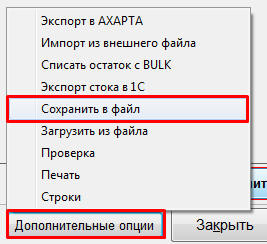
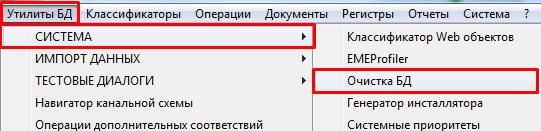
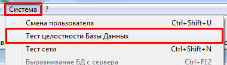
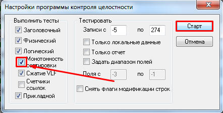
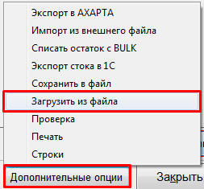

Очищать базу данных (БД) необходимо, когда в ней накапливается слишком много информации, что может замедлять работу программы и не редко приводить к ошибкам.
Последовательность действий:
Создаём инвентаризацию, включающую все ячейки 2 и 3-го типа (MS и P).
Нажимаем на вкладке «Сравнение» кнопку «Дополнительные опции», далее из выпадающего списка выбираем строку «Сохранить в файл».

Указываем папку, куда будем сохранять файл инвентаризации, в последующем данный файл будет использован для загрузки.
Заходим на вкладку «Утилиты БД», далее «Система» - «Очистка БД».

Откроется окно «Очистка БД», выбираем глубину очистки «Документы, остатки» и нажимаем кнопку «Выполнить» и подтверждаем свой выбор.
После завершения очистки надо запустить «Тест целостности БД»: Система - «Тест целостности БД», после этого откроется окно «Настройка программы контроля целостности», в этом окне по мимо уже установленных настроек устанавливаем галочку «Монотонность проверки» и нажимаем «Старт».


В процессе проверки БД на целостность возникнут рассогласования – для их устранения нажимаем «F2» во всех случаях.
После завершения проверки создаём новую инвентаризацию и загружаем в неё сохранённый ранее файл.

Выключаем инвентаризацию.
Теперь все созданные ранее документы удалены, однако остатки товаров остались в неизменном виде.